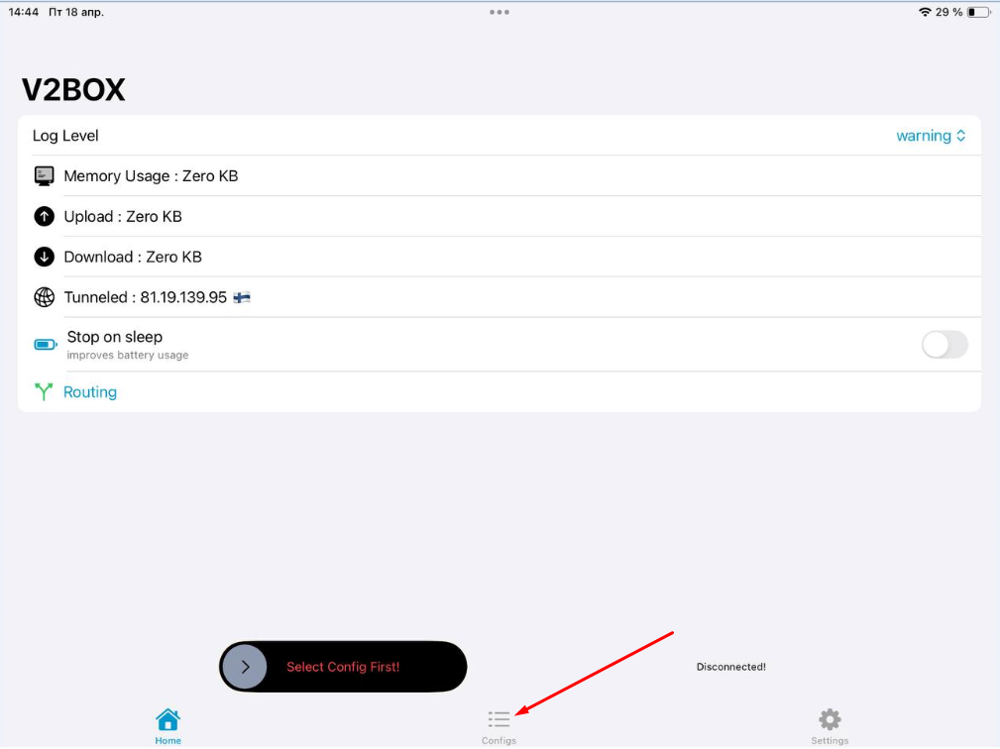
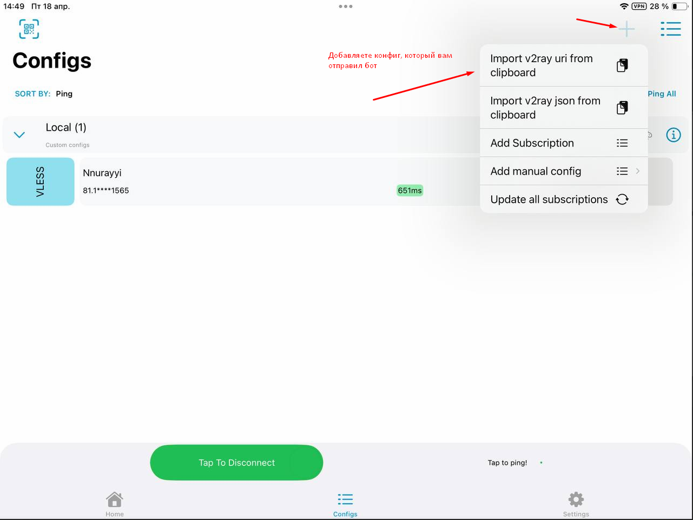
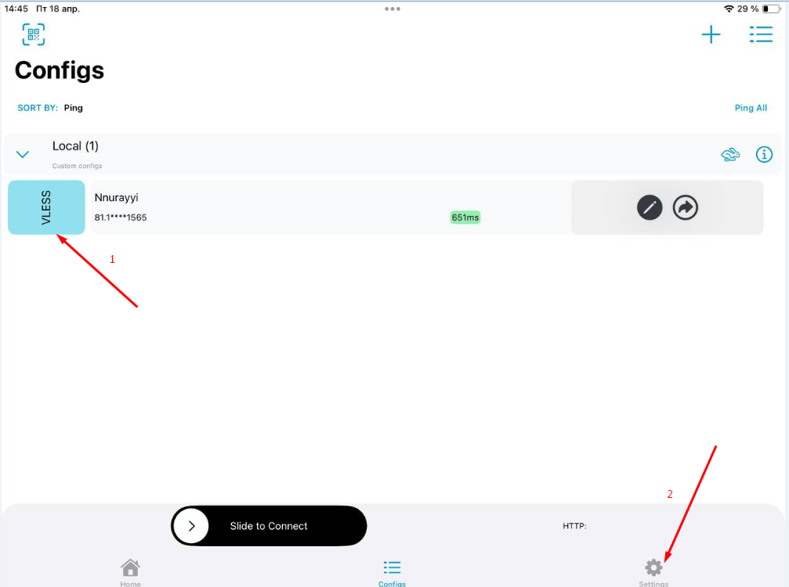
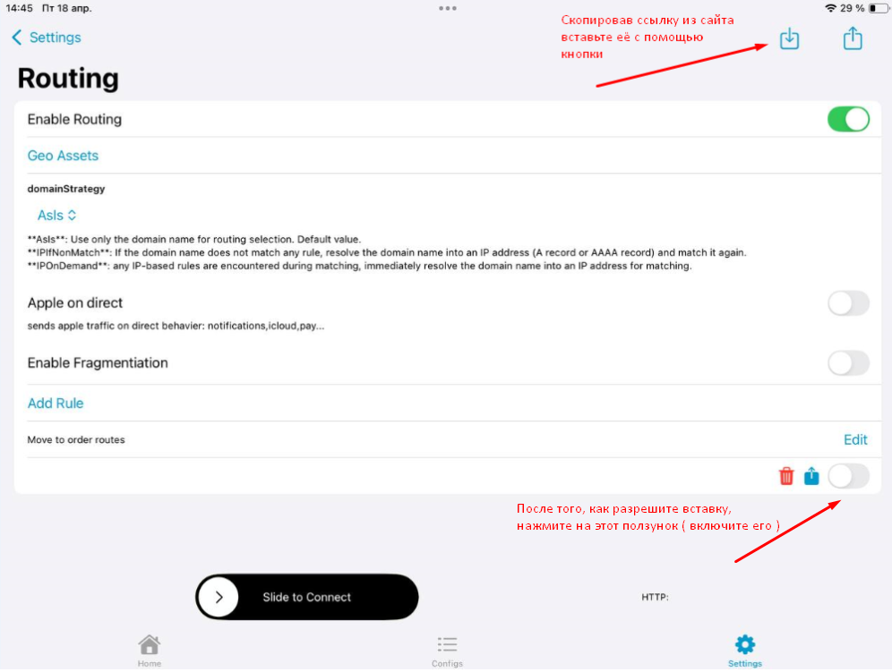
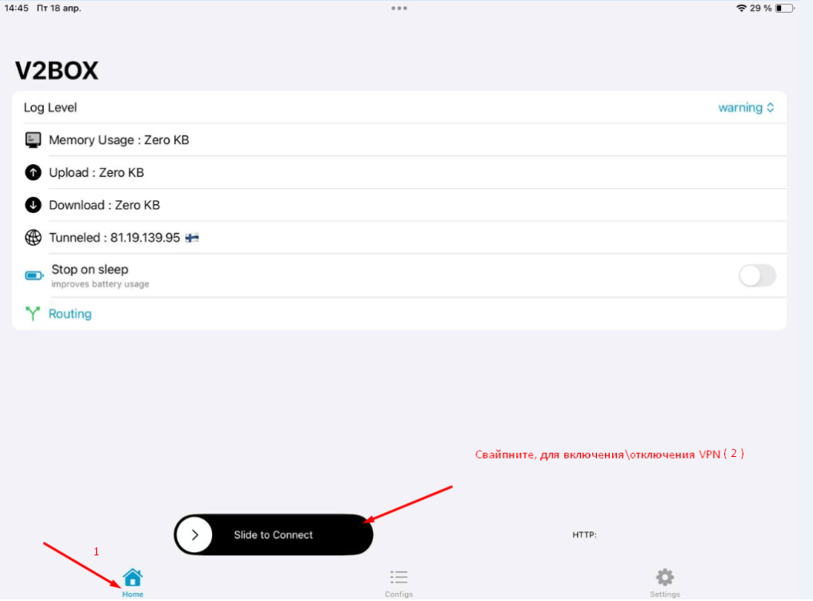

v2box://routes?multi=W3sidHlwZSI6ImRvbWFpblN1ZmZpeCIsImRvbWFpbiI6InJ1IiwiYmVoYXZpb3IiOiJkaXJlY3QifSx7InR5cGUiOiJkb21haW4iLCJkb21haW4iOiJydSIsImJlaGF2aW9yIjoiZGlyZWN0In0seyJ0eXBlIjoicHJvY2VzcyIsInByb2Nlc3MiOiJzdGVhbS5leGUiLCJiZWhhdmlvciI6ImRpcmVjdCJ9LHsidHlwZSI6ImFsbCIsImJlaGF2aW9yIjoicHJveHkifV0=

